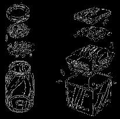
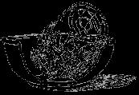

One of the basic tenets of the (Heaven forbid!) Protestant Ethic is you don't get something for nothing . . . and the way we've allowed the system to become organized, that's certainly true. In fact, you could say more than true.
Consider the rather small pile of devitalized and fortified, homogenized and separated, treated, processed, preserved, bleached and embalmed plastic food the local supermarket just traded you for that rather large stack of hard-earned bills. Clearly a case, say the malcontents among us, of getting nothing for something . . . and they may be right.
Well, there is a way out of this dilemma because you can grow your own completely natural, unprocessed and unpoisoned food at home . . . on pennies a day . . . fresh all year round. Yep. And unbelievable as it may sound, you can do it without a degree in agriculture, complicated machinery, fourteen kinds of fertilizer or a single, solitary cubic inch of soil.
What's more, you can raise this "garden" anytime and anywhere . . . in your own kitchen, crossing the country in a camper or sitting on a flagpole. And finally, the "vegetables" you produce will be many times tastier, much more nutritious and far less expensive than anything you can buy. If that's not something for nothing, it's an awful lot for mighty little.
Naturally, since such a food is almost too good to be true, our Western heritage-famed for DDT, thermonuclear bombs and the pop-top beer can-has neglected to advise us about it. (Maybe because it's so hard to exploit commercially?) Yet almost every primitive tribe and the entire Eastern world-back to the dawn of recorded history-has made good use of . . . sprouted seeds, or sprouts.
Sprouts are truly a miracle food. You can grow them almost any time and any place on only water, air and-sometimes-a little sunlight. You can produce a new crop every two to six days with a total of, maybe, 10 minutes work. They're more nourishing than milk, fresh meat . . . or anything: you could live almost indefinitely on nothing but sprouts if you wanted. They store exceptionally well in a refrigerator and can even be dried. You can eat them thousands of ways . . . on breakfast cereal, in fresh salads, steamed, in scrambled eggs, sprinkled on soups, in meat loaf, as a major ingredient of the world's absolutely best tasting and most nutritious bread, fried, in stews, blended into health drinks, as a sandwich filling, in desserts, as a snack. And even at today's inflated prices, sprouts will cost you only moat about five cents a pound.
Sprouts, in short, are so fantastically great that if General Mills or the President's Commission On Poverty had developed them-they would most certainly be ballyhooed as The Complete, Transcending Nutritional Miracle Of All Time. Neither God nor Mother Nature ever hired a press agent, however, so most residents of the United States eat sprouts only occasionally and only by accident when they happen to dine in a chinese restaurant.
And more's the pity. Because a mere twenty or twenty-five million dollars (pin money in the current federal budget) well invested one time in sprouting containers and instructions distributed to the residents of tenant-farm shacks and crumbling tenements across this fair land . . . could conceivably wipe out malnutrition in the U.S.... completely.
That's a sweeping statement, but look at it this way: we think we're pretty smart here in the U.S. of A. because "with the world's most technically advanced agribusiness", we successfully raise enough food (even though we don't distribute it) to feed our 200 million people and have some left over to export. Of course we're rapidly poisoning all our potable water with nitrates and pesticides, we're "farming out" the top soil in the midwest and we're silting and salting away hundreds of thousands of acres in the irrigated southwest . . . but, as they say, "that's the price we have to pay".
Now consider creaky old, backward, underdeveloped China. With less really fertile farm land, almost no chemical fertilizers and hardly any modern farm machinery, China also exports grain . . . and feeds nearly one billion citizens. One billion! A thousand million. Have you any idea what a tremendous accomplishment that is . . . and how impossible it would be for our "modern" agricultural system? Pretty clever, these Chinese. How do they do it?
Well one of China's secrets is sprouts. Matter of fact, the earliest recorded mention of the tremendous food value of germinated seeds occurs in a book attributed to the Emperor of China about 2939 B.C. . . . and it probably wasn't a new idea even then. Now, five thousand years later, Chinese cuisine-among the most delicious and nutritious in the world-still puts special emphasis on sprouts. If that doesn't make the little beasties "time tested", nothing will!
Now, if you will, reflect a moment on the fantastic dif ference in life style that the lowly sprout can wield. Sprouts are home-grown by nearly every Chinese family, thus assuring each living unit of a steady supply of high-energy, low-cost food and automatically eliminating much of the wasteful transportation, processing, packaging and retailing costs of our "more highly developed" food production system. The Chinese thus wisely avoid the equivalent of giant trucks belching diesel fumes as they haul frozen lettuce from California to Chicago, vast networks of concrete creeping in upon the last open spaces and sprawling supermarkets selling plastic produce, which is to say that we are what we eat in far more ways than one.
To make a long story medium-length, then, the Chinese have been relying heavily on sprouts ever since that ancient Emperor wrote his book on plants and foods . . . and so have a lot of other folks in the Eastern world and a number of underdeveloped nations. And well they might, because modern research is continually proving and reproving the nutritional qualities of sprouts.
You can successfully grow sprouts in any number of common kitchen containers if you adapt your technique to the equipment at hand. Just keep in mind that the ideal sprout "garden" provides a warm, dark, moist- not wet -environment for the developing seeds. It's also a good idea to use one jar, strainer, pan or whatever exclusively for raising shoots (to help prevent tainting them).
Probably the simplest container of all is a largemouthed quart jar (use a smaller or bigger jar, depending on how many sprouts you want to grow at a time). Most folks who use such a jar simply dump in the seeds, stretch a piece of cheesecloth over the top and secure the cloth with a rubber band. Others prefer to cut a circle of wire mesh which is clamped to the jar top by a screw-on canning ring. Either cover allows convenient and thorough flushing of the shoots every four to six hours as they develop. Such a sprouting container is usually kept in a dark cupboard between rinsings. A large bowl makes an ideal holder for the jar during these growth periods since the container should be held top down at about a 45° angle to insure proper drainage of the sprouts.
An earthenware flowerpot with its bottom drain hole partially blocked by cheesecloth or a wad of cotton also makes a good sprout garden. Unglazed pottery is best because it absorbs water and thus insures that the shoots will be kept moist but not wet. Cover the pot with a saucer and set it in a shallow pan of water. Remember, however, that even though moisture will "wick" through the bottom of an unglazed flowerpot, the sprouts will still need regular rinsings of clean water to retard the development of mold.
Tea strainers, collanders and coffee percolators are excellent sprouting containers and-several years ago, while living in Seattle-I modified two plastic freezing cartons, a small square of screen wire and a piece of sponge into a "never fail" version of the tea strainer sprouter (see illustration). The large cans and metal mesh-covered trays used by commercial sprouters are another variation on the same idea.
In a pinch, seeds can be sprouted between moist towels, sponges or layers of paper although lack of ventilation usually leads to souring and molds when using paper and the shoots have an annoying habit of growing through the towels.
Small sprouters are also sold by a few mail order companies but are usually overpriced and work no better than the quart jar described here. As a matter of fact, few expensive store-bought sprouters work as well as the freezer carton-screen wiresponge combination illustrated with this piece.-JS.
Dr. Pauline Berry Mack, at the University of Pennsylvania, has tested sprouted soybeans for Vitamin C (the ungerminated seed contains none) and found that-when sprouted 72 hours-one-half cup of the shoots contained as much Vitamin C as six glasses of orange juice.
Similar incredible leaps in vitamin content have been recorded for other sprouts. Yale's Dr. Paul Burkholder , for instance, discovered that oats sprouted five days had 500% more B 6 , 600% more folic acid, 10% more B 1 and 1350% more B 2 than unsprouted oats.
It should be noted, of course, that such vitamin increases are not always a straight-line thing. Vitamin B 1 -to cite one example-runs up and down like a yoyo in soybeans as they sprout . . . but the general trend is always spectacularly up and sprouted seeds are an excellent source of vitamins A, B-complex, C, D, E, G, K-even U-and minerals such as calcium, magnesium, phosphorous, chlorine, potassium, sodium and silicon. All in natural forms which the body can readily assimilate.
Furthermore, according to Dr. Francis Pottenger, Jr., sprouted grains and legumes supply all eight essential amino acids which make up "complete" protein. Other investigations have shown that many of the proteins in sprouts are already "predigested", or broken down into their constituent amino acids.
Sprouts also just happen to be packed full of enzymes-the complex catalysts which initiate and control almost every chemical reaction that takes place in living organisms-too. Since the body gradually manufactures fewer and fewer enzymes as it ages, since enzymes are killed by temperatures greater than 140° (cooking) and since our stock of enzymes must be replenished by eating fresh produce . . . it seems that we've just discovered another dang good reason for consuming goodly quantities of raw, freshly-grown sprouts.
Then too, it's interesting to note that Dr. Loa of Yenching University in Peking reports that the high level of simple sugars in sprouts puts the little shoots in the category of "quick energy" foods, since the monosaccarides they contain require little digestive breakdown and enter the bloodstream almost immediately.
Perhaps most amazing of all-particularly in comparison with the chemically preserved but nutritionally next-to-worthless foods from the supermarket-all the body builders which appear as sprouts grow . . . turn out to be almost perfectly stable. Even after dehydration or freezing, sprouts retain their enhanced nutritive values.
But where do all these great things come from? How can seeds full of fat and starches . . . plus plain old air, water and a little sunshine . . . add up to vitamins, proteins and enzymes?
Simple. During sprouting, those fats and starches are converted into vitamins, simple sugars and proteins as they absorb the air and water.
Seeds, you see, are divided into two basic parts: a miniature replica of a plant (the embryo) and a supply of stored carbohydrates, oils and proteins (the endosperm). When environmental conditions are suitable-here's where the warmth, moisture and air comes in-a seed germinates. That is, the tiny embryo feeds upon the endosperm until it has roots sunk into the soil and leaves opened to the sun.
During this process, much of the until-now-inactive endosperm is converted into readily-available nutrients . . . and that metamorphosis is the key to the miracle food value of sprouts. If we harvest the little shoots after the endosperm has been transformed into rich vitamins, enzymes, amino acids, etc. but before the embryo gets a chance to consume the nourishment . . . we've got about the best-for-us food imaginable!
Well, the theory is beautiful . . . but what about practical results? "I'm glad," said he, in his best W.C. Field's voice, "you asked that question." Here are just a handful of astonishing health cures credited to sprouts:
During WWI, Dr. Cyrus French used sprouted peas and lentils rich in Vitamin C to rid British and Indian troops in Mesopotamia of scurvy symptoms.
In the Philippines, a Dr. Santos cured patients of beri-beri by administering sprouted mung beans as the only source of B-complex vitamins.
Ann Wigmore of Boston has demonstrated the beneficial effects of sprouts in retarding and curing problems ranging from diabetes to ulcers to cancer.
Fertility was restored to barren cows at the Agricultural Experimental Station in Beltsville, Maryland by feeding the animals Vitamin E-laden oat sprouts.
Major Wiltshire of King's College in England, finding that Algerian laborers in France suffered from scurvy (although they'd been healthy at home), traced their diet deficiency to commercial beer . . . which lacks the Vitamin C of their native sprouted millet beer.
If you need more convincing, Catharyn Elwood packs a lot of examples into a few pages of her book, FEEL LIKE A MILLION (Pocket Books, Inc., 75 cents). For now, let's just say that sprouts are powerful food.
Inexpensive too. If you buy a hundred pounds of organically-grown soybeans for fifteen dollars plus freight, say, your cost per pound will average twenty cents. If you then soak and sprout the beans, you'll find you harvest four to eight pounds of shoots from each pound of dry beans. Your cost for the delicious, vitamin-packed sprouts, then, is less than five cents per pound . . . nothing to sneeze at in these days of funny money, recession and unemployment.
I can appreciate questions about the taste of sprouts because I don't care for cooked okra, turnips, cabbage and a lot of other garden fare. I do like fresh green salads and raw vegetables, however, and that's what most sprouts-especially raw alfalfa sprouts-are all about. Soybean shoots served the same way have a little too much raw bean taste for me but become magically delicious with only the slightest (about one-two minutes) steaming. Sprouted wheat goes well on cereal and is excellent in home-baked bread, rye sprouts add a mouthwatering wild rice taste when sprinkled into soups just before serving and sprouted peas are fantastic if lightly steamed and served with a pat of butter melting down through them. Almost everyone, of course, has a favorite Chinese recipe built around mung bean sprouts.
Which is to say that there's almost as much variety in the taste of sprouts as there is in "traditional" vegetables. Personal tastes vary but you're sure to find at least half a dozen "kinds" of sprouts and a couple of hundred sprout recipes that suit you to a T. Almost any natural foods cookbook features a great number of ideas for using the little critters, starting with raw salads and ending with "pick-me-up" beverages made by blending the shoots with various combinations of fruit juices, nuts and honey. The possibilities are truly endless.
So, if you recognize a good thing when you see it, you're probably gonna run right out, get you a sprouter and start tapping all the goodness Momma Nature has locked into seeds. To coin a phrase, "Start sprouting . . . and start living!"
Almost any seed, grain or legume can be successfully sprouted although most devotees of the art think that alfalfa, soybeans, mung beans, lentils, peas and the cereal grasses-wheat, oats, barley and rye-give the very best results. Unhulled sesame and sunflower, radish, mustard, red clover, fenugreek, corn, lima beans, pinto beans, kidney beans, chick peas, cress, millet and nearly any other seed you can think of will work, however (never eat potato sprouts though, the plant is a member of the poisonous nightshade family).
Select clean, whole seeds . . . the best you can find. Make certain they haven't been chemically treated in any way, however, because the poison could have damaged the embryo which might cause the seed to rot instead of sprout. Needless to say, the treatment might also sicken or poison you.
Wash the seeds thoroughly, pick out any chaff or cracked hulls and check the grain or whatever for fertility (sterile seeds float).
It only takes about a tablespoon of alfalfa seeds and two or three times that amount of beans or peas to "plant" 25-30 square inches. Soak the seeds overnight in a warm, dark place (such as a kitchen cupboard) in about three times as much water as you have seeds. The water should be warm (70-80°) and free of chlorine and flourine (which can sterilize the tender embryo). Some of the smaller seeds-alfalfa, clover, etc.-will sprout without this overnight soak but it won't hurt them.
Pour the water off the next morning and save it to add to fruit juices or use as stock (it's loaded with water-soluble vitamins and minerals). The seeds will have doubled in size and should be rinsed carefully to avoid mold.
Place the seeds in a warm, moist, dark container. Flush every four to six hours with water to clean the developing sprouts and to insure adequate moisture for their growth. Be absolutely certain the seeds drain well after each rinsing, however, for they'll sour and rot if left standing in water. Remember too that some heat will be generated by the sprouts. They'll need a little ventilation so don't cover them too tightly.
In three to six days, depending on temperature (80-90° is best for most) and seed variety, your sprouts will again have doubled or tripled in volume and you'll have yourself some mighty good and nourishing eating. The greater number of shoots are at peak vitamin potency 60 to 80 hours after germinating . . . but personal preferences in taste, texture and appearance may persuade you to let yours grow longer.
Soybeans, peas and alfalfa are about right when their sprouts are two to three inches long. Grain shoots should be eaten when much shorter-about the length of the kernel itself-or they're bitter. Sunflower sprouts also develop a rather unpleasant tangy taste when they exceed the length the seeds from which they develop. The lentil sprout is best when about an inch long, while shoots from the mild-flavored mung bean may be allowed to reach a length of three or four inches before harvest. By the way, some people pluck the seed hull from each sprout before serving but that's a waste of time and good nutrition . . . eat the whole shebang!
If you expose your sprouts to indirect sunlight during their final several hours of growth, they'll develop chlorophyl. Too much of this green substance causes the shoots to toughen, however, so don't overdo it. Some chlorophyl is good, though, because its molecule is very similar to hemoglobin-the only difference being that chlorophyl has magnesium at its center while hemoglobin has iron-and, consequently, acts as a kind of blood booster.
You may have some difficulty getting soybeans to sprout successfully, especially in warm weather, so be particularly careful to use beans from the current year's crop (this is good advice generally). Varieties which sprout best include Chief, Ebony, Illini, Lincoln and Richland . . . and, happily, all beans lose their gas-producing qualities as they turn into shoots.
|
 |
|
 |